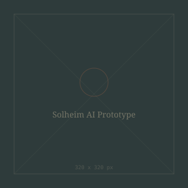

Add your image here'"/>The Solheim Image Recognition Prototype investigated the potential of artificial intelligence (AI) for identifying and comparing design variations within Saltdalshytta's Solheim cabin series.
The goal was to create an internal tool that could automatically detect differences between floor plan drawings, illustrating how closely a client's desired layout matched the existing versions in the company's database.
This project utilised machine learning techniques, specifically Convolutional Neural Networks (CNNs), developed in Python using Keras, TensorFlow, and OpenCV. Two data sources were evaluated:
By training the system to interpret and compare architectural drawings, it was able to produce similarity scores and visually highlight discrepancies such as shifted walls, altered window placements, and changes in room dimensions.
While the project remained in the prototype phase, it showcased the potential for AI-driven image comparison to serve as a valuable tool for organising and learning from architectural design data — ultimately aiding future teams in working more efficiently and making data-informed design choices.